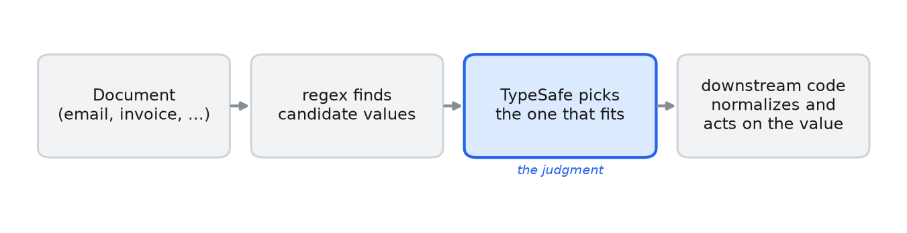

预解析值提取
用正则表达式找出候选的电子邮件、电话号码和金额，然后让 TypeSafe 选出所需的文本片段，以便代码能对逐字复制的值进行规范化。
正则表达式找出候选值，TypeSafe 挑出问题所问的那一个，代码逐字复制它。
这里的 find 与 pick 组合可以指向你自己的文档，三个完成的案例展示了它的用法：发件人希望把收据寄往的地址、形如 +14155550177 的电话号码，以及被标记为扣款（charge）的发票总额 1315.50 USD。
TypeSafe 从你递给它的选项中挑一个，所以必须先找出候选。正则表达式找出候选，TypeSafe 挑出一个，代码复制选中的值，分三步：
正则表达式在文本中找出候选值。把它调校得宁多勿漏。
TypeSafe 挑出问题所问的候选，并读出代码下游需要的任何属性（币种、国家、金额是贷记（credit）还是扣款（charge））。
代码复制选中的值并进行规范化。
由于 TypeSafe 只在正则表达式找到的片段中选择，你拿回来的值就是这些片段之一，原样复制。它不可能凭空发明一个值，也不可能调换数字。

正则表达式在文档中找出候选值，TypeSafe 挑出一个，下游代码将其规范化并据此行动。
设置
pip install ipython phonenumbers 'cooksafe>=0.2.0,<0.3.0'然后设置 TYPESAFE_API_KEY。
import os
import re
from decimal import Decimal
from pathlib import Path
import phonenumbers
from cooksafe import JsonCache, make_playground_link
from IPython.display import Markdown, display
from typesafe_sdk import Choice, Noul, TypeSafeClient
TYPESAFE_MODEL = "jev-1.12"
NONE = "none" # the escape hatch on every selection: "none of the candidates fits"
# base_url defaults to https://api.typesafe.ai/ ; the env override points at another deployment.
ts = TypeSafeClient(
api_key=os.environ.get(
"TYPESAFE_API_KEY", "cache-only"
), # cached re-renders need no key
base_url=os.environ.get("TYPESAFE_BASE_URL"),
timeout=30.0,
)
json_cache = JsonCache(Path("json_cache.json"))辅助函数
find 运行一个调校得宁多勿漏的正则并对匹配去重。pick 是一个 Choice 问题，其选项就是 find 返回的片段，因此它的答案是这些片段之一的原样复制，在没有候选合适时为 none。classify 是针对固定标签集的 Choice 问题，这里用于币种和国家。 is_true 是一个 Noul，这里用来询问金额是否为贷记。
每次调用都缓存到 json_cache.json，因此重新渲染不会发起任何 API 调用。
EMAIL_RE = re.compile(r"[A-Za-z0-9._%+-]+@[A-Za-z0-9.-]+\.[A-Za-z]{2,}")
PHONE_RE = re.compile(r"\(?\+?\d[\d\s()\-.]{6,}\d")
MONEY_RE = re.compile(r"[$€£¥]\s?\d[\d,]*(?:\.\d{2})?")
def find(pattern: re.Pattern, text: str) -> list[str]:
"""Code-side candidate finder: recall-tuned regex, deduped, in document order."""
seen: set[str] = set()
out: list[str] = []
for match in pattern.findall(text):
span = match.strip()
if span and span not in seen:
seen.add(span)
out.append(span)
return out
@json_cache
def pick(document: str, candidates: list[str], question: str) -> dict:
"""TypeSafe selects which found span plays the role. Returns {choice, confidence}.
The options ARE the candidate spans, so ``choice`` is a verbatim copy of one of them (or the
``none`` hatch) - the model chooses, code owns the string."""
criteria = {c: None for c in candidates} | {
NONE: "None of these is the requested value."
}
answer = ts.system_one(
state=document,
questions={"pick": Choice(instructions=question, criteria=criteria)},
model=TYPESAFE_MODEL,
).answers["pick"]
return {"choice": answer.choice, "confidence": answer.confidence}
@json_cache
def classify(document: str, question: str, options: list[str]) -> dict:
"""A small Choice over a fixed label set (currency, country, ...). Returns {choice, confidence}."""
answer = ts.system_one(
state=document,
questions={
"q": Choice(instructions=question, criteria={o: None for o in options})
},
model=TYPESAFE_MODEL,
).answers["q"]
return {"choice": answer.choice, "confidence": answer.confidence}
@json_cache
def is_true(document: str, question: str) -> float:
"""A yes/no Noul. Returns P(yes)."""
return (
ts.system_one(
state=document,
questions={"q": Noul(instructions=question)},
model=TYPESAFE_MODEL,
)
.answers["q"]
.noul
)电子邮件：按角色挑选正确的地址
邮件头里有四个地址。正文要求把收据寄到个人地址，而不是 To: 的账单别名，所以答案取决于阅读正文。这里有两个问题：哪个地址收收据，哪个地址发了这封邮件。
EMAIL_DOC = """From: Dana Whit <dana.whit@acme-corp.com>
To: billing@acme-corp.com
Cc: orders@acme-corp.com
Reply-To: dana.personal@gmail.com
Hi team - please don't use the billing alias for this one. Send my receipt to my
personal address instead. Thanks, Dana."""
emails = find(EMAIL_RE, EMAIL_DOC)
receipt = pick(
EMAIL_DOC, emails, "Which email address does the sender want their receipt sent to?"
)
sender = pick(
EMAIL_DOC, emails, "Which email address did this message come from (the From line)?"
)
print("candidates :", emails)
# code copies the picked value verbatim and normalizes (lowercase); it never re-types it
print(
f"receipt -> : {receipt['choice'].lower():<28} (conf {receipt['confidence']:.2f})"
)
print(f"sender -> : {sender['choice'].lower():<28} (conf {sender['confidence']:.2f})")candidates : ['dana.whit@acme-corp.com', 'billing@acme-corp.com', 'orders@acme-corp.com', 'dana.personal@gmail.com']
receipt -> : dana.personal@gmail.com (conf 0.98)
sender -> : dana.whit@acme-corp.com (conf 1.00)receipt 是 Reply-To: 行上的个人 Gmail 地址，正是正文所要求的；sender 是 From 行上的那个。两者都是正则匹配结果的复制，在代码中转为小写。
电话：挑选手机号，规范化为 E.164
三个号码，没有一个带国家代码。TypeSafe 挑出手机号并从文本中读出国家；phonenumbers 把这两个答案合成为 E.164——以 + 加国家代码开头的国际格式。
PHONE_DOC = """Reach our San Francisco office at these numbers: main desk (415) 555-0199,
billing fax (415) 555-0142, and my direct cell (415) 555-0177. Call the cell if it's urgent."""
phones = find(PHONE_RE, PHONE_DOC)
mobile = pick(PHONE_DOC, phones, "Which of these is the direct mobile / cell number?")
region = classify(
PHONE_DOC,
"In what country is this office located?",
["US", "GB", "DE", "FR", "CA", "AU"],
)
# code copies the picked value and normalizes it with the model-supplied country
parsed = phonenumbers.parse(mobile["choice"], region["choice"])
e164 = phonenumbers.format_number(parsed, phonenumbers.PhoneNumberFormat.E164)
print("candidates :", phones)
print(f"mobile -> : {mobile['choice']} (conf {mobile['confidence']:.2f})")
print(f"country -> : {region['choice']} (conf {region['confidence']:.2f})")
print(f"E.164 -> : {e164}")candidates : ['(415) 555-0199', '(415) 555-0142', '(415) 555-0177']
mobile -> : (415) 555-0177 (conf 1.00)
country -> : US (conf 0.90)
E.164 -> : +14155550177数字本身说不出哪个号码是手机号、它属于哪个国家；周围的词语才行。TypeSafe 读懂这些词语，phonenumbers 把选中的号码格式化为 +14155550177。
金额：挑选数额，分类币种，标记贷记还是扣款
一张写着四个金额的发票。TypeSafe 挑出应付总额和贷记额，读出币种，并把每个选中的金额标记为扣款或贷记。代码复制每个选中的字符串并解析为 Decimal。
MONEY_DOC = """Invoice INV-2087.
Subtotal: $1,200.00
Sales tax: $115.50
Total due: $1,315.50
A $50.00 courtesy credit from last month has already been applied."""
amounts = find(MONEY_RE, MONEY_DOC)
currency = classify(
MONEY_DOC,
"What currency are these amounts in?",
["USD", "EUR", "GBP", "JPY", "CAD"],
)
total = pick(MONEY_DOC, amounts, "Which amount is the total the customer must pay?")
credit = pick(
MONEY_DOC, amounts, "Which amount is the courtesy credit that was applied?"
)
def to_decimal(value: str) -> Decimal:
"""Copy the picked value and parse the number in code (US grouping/decimal here)."""
return Decimal(re.sub(r"[^\d.]", "", value))
for label, chosen in [("total due", total), ("credit", credit)]:
is_credit = is_true(
MONEY_DOC,
f"Is the amount {chosen['choice']} a credit or refund to the customer, not a charge?",
)
kind = "credit" if is_credit > 0.5 else "charge"
print(
f"{label:<10}: {chosen['choice']:<10} -> {to_decimal(chosen['choice'])} {currency['choice']} "
f"({kind}, P(credit)={is_credit:.2f})"
)
print("\ncandidates :", amounts)total due : $1,315.50 -> 1315.50 USD (charge, P(credit)=0.01)
credit : $50.00 -> 50.00 USD (credit, P(credit)=0.99)
candidates : ['$1,200.00', '$115.50', '$1,315.50', '$50.00']应付总额是 \$1,315.50，贷记额是 \$50.00，均为 USD。贷记还是扣款的 Noul 在总额上回答 0.01，在贷记上回答 0.99，因此代码知道它解析出的每个 Decimal 的符号。
to_decimal假定逗号对千位分组、句点是小数点。这对$1,315.50成立；在€1.315,50中则正好相反。可以用一个Noul问题询问文档使用哪种约定，然后在代码中据此分支。
在 TypeSafe Playground 中打开
一个分享链接，在浏览器中打开这封邮件会话，上面带着收据问题，以及正则找到的四个地址作为选项。
receipt_criteria = {e: None for e in emails} | {
NONE: "None of these is the requested value."
}
playground_link = make_playground_link(
EMAIL_DOC,
{
"receipt": Choice(
instructions="Which email address does the sender want their receipt sent to?",
criteria=receipt_criteria,
)
},
models=[TYPESAFE_MODEL],
)
display(
Markdown(
f"🔗 [Open this thread + selection in the TypeSafe playground]({playground_link})"
)
)两个限制
一个
Choice问题最多允许 255 个选项。候选超过这个数时，分两步缩小范围：先挑出区块，再挑其中的片段。找出候选才是费工夫的部分。电子邮件、电话号码和金额都有覆盖它们的正则表达式；名字没有，所以名字的候选必须来自你已有的名册，或者由命名实体识别器或 LLM 提出。TypeSafe 再从中挑出问题所问的那一个。